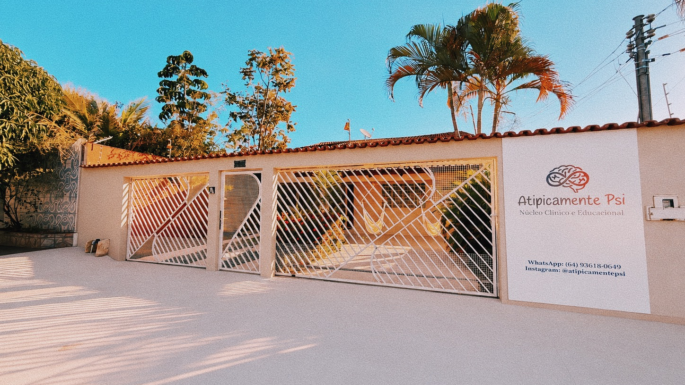

ATIPICAMENTE PSI
Núcleo Clínico & Educacional
Ambiente estruturado para avaliação neuropsicológica, estimulação precoce, intervenção ABA e psicoterapia baseada em evidências para crianças, adolescentes e famílias.

Salas temáticas, isolamento acústico e estímulos sensoriais dosados para avaliação e terapias.
Registros reais das salas em Caldas Novas, preparadas com recursos lúdicos, mobiliário ergonômico e conforto para acolher pacientes e responsáveis.

Projetada para atender crianças no espectro autista (TEA) e TDAH com materiais específicos de integração sensorial.

Ambiente com café, água e suporte dedicado para familiares enquanto aguardam a sessão.

Jogos terapêuticos e estímulo à linguagem.

Privacidade total para jovens e adultos.

Bateria aprovada pelo SATEPSI para laudos.
Cada membro da nossa equipe possui registro ativo no CRP 09 e constante aprimoramento em práticas clínicas baseadas em evidências.

Psicóloga • CRP 09/22894

Psicóloga • CRP 09/22914

Psicólogo • CRP 09/23069
Protocolos clínicos desenvolvidos para promover autonomia, bem-estar e desenvolvimento funcional.
Mapeamento minucioso de memória, atenção, raciocínio lógico e funções executivas com laudos detalhados.
Análise do Comportamento Aplicada com metas individualizadas para comunicação e independência.
Atendimento lúdico e acolhedor para crianças e adolescentes lidarem com ansiedade, frustração e rotina.
Alinhamento de práticas entre família e equipe pedagógica para garantir um ambiente consistente.
Nossa equipe está à disposição para esclarecer etapas da avaliação, documentação necessária e horários disponíveis em Caldas Novas.